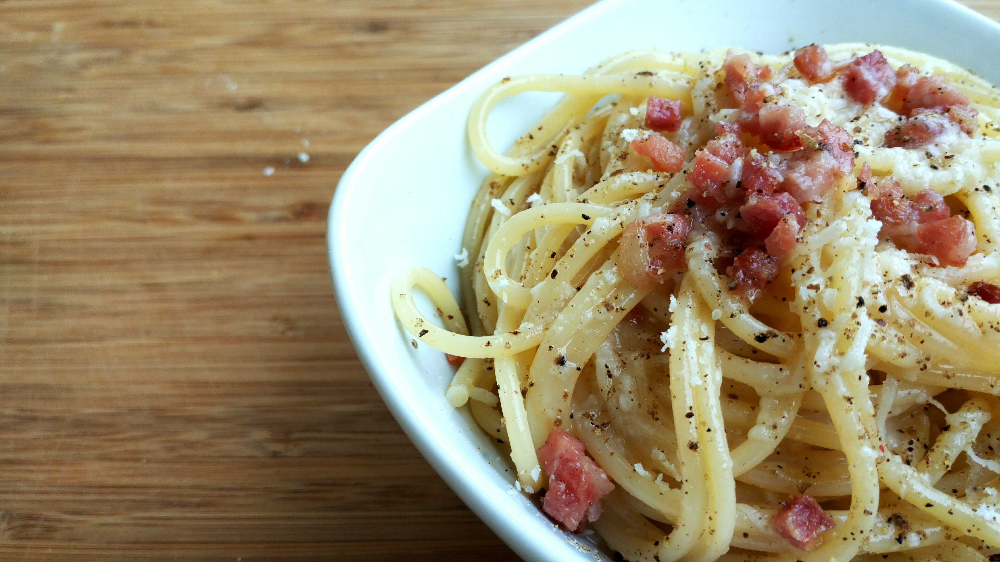

Carbonara

Finished pasta carbonara
Pasta carbonara is an indulgent yet surprisingly simple recipe.
Featuring bacon (or pancetta) with plenty of Parmesan, this recipe
takes only 30 minutes to prepare from start to finish!
Spaghetti alla carbonara. Luscious and wonderfully indulgent,
pasta carbonara takes as long to make as it does to cook the
pasta.
Ingredients
- 1/2 pound pancetta or thick cut bacon, diced
- 3-4 whole eggs
- 1 cup grated Parmesan or pecorino cheese
- 1 pound spaghetti (or bucatini or fettuccine)
Steps
- Heat pasta water.
- Sauté pancetta/bacon and garlic.
- Beat eggs and half of the cheese.
- Cook pasta.
- Toss pasta with pancetta/bacon.
- Add the beaten egg mixture.